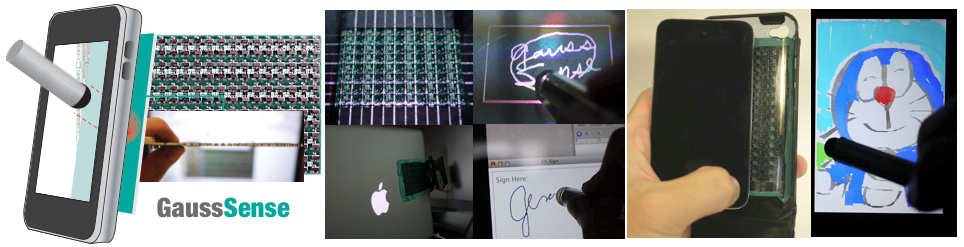

1National Taiwan University 2Academia Sinica
howieliang@cmlab.csie.ntu.edu.tw

GaussSense is a back-of-device sensing technique for enabling input on an arbitrary surface using stylus by exploiting magnetism. A 2mm-thick Hall sensor grid is developed to sense magnets that are embedded in the stylus. Our system can sense the magnetic field that is emitted from the stylus when it is within 2cm of any nonferromagnetic surface. Attaching the sensor behind an arbitrary thin surface enables the stylus input to be recognized by analyzing the distribution of the applied magnetic field. Attaching the sensor grid to the back of a touchscreen device and incorporating magnets into the corresponding stylus enable the system 1) to distinguish touch events that are caused by a finger from those caused by the stylus, 2) to sense the tilt angle of the stylus and the pressure with which it is applied, and 3) to detect where the stylus hovers over the screen. A pilot study reveals that people were satisfied with the novel sketching experiences based on this system.
@inproceedings{2380157,
author = {Liang, Rong-Hao and Cheng, Kai-Yin and Su, Chao-Huai and Weng, Chien-Ting and Chen, Bing-Yu and Yang, De-Nian},
title = {GaussSense: attachable stylus sensing using magnetic sensor grid},
booktitle = {UIST '12: Proceedings of the 25th annual ACM symposium on User interface software and technology},
year = {2012},
isbn = {978-1-4503-1580-7},
pages = {319--326},
location = {Cambridge, Massachusetts, USA},
doi = {http://doi.acm.org/10.1145/2380116.2380157},
publisher = {ACM},
address = {New York, NY, USA},
}